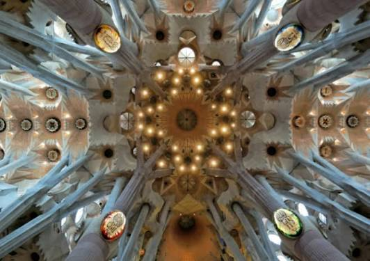
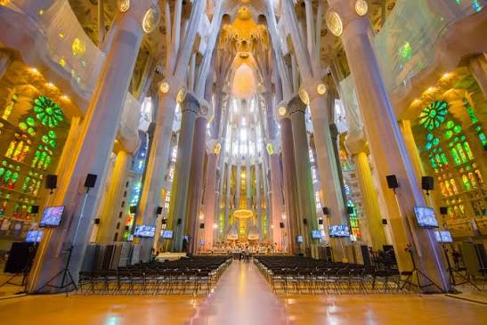

El Templo Expiatorio de la Sagrada Familia (en catalán: Temple Expiatori de la Sagrada Família), conocido simplemente como la Sagrada Familia, es una basílica católica de Barcelona (España), diseñada por el arquitecto Antoni Gaudí. Iniciada en 1882, todavía está en construcción. Es la obra maestra de Gaudí y el máximo exponente de la arquitectura modernista catalana. Es el monumento más visitado de España, y es la iglesia más visitada de Europa tras la basílica de San Pedro del Vaticano. El 30 de octubre de 2025 se convirtió en la iglesia más alta del mundo.
La Sagrada Familia es un reflejo de la plenitud artística de Gaudí: trabajó en ella durante la mayor parte de su carrera profesional, pero especialmente en los últimos años de su carrera, donde llegó a la culminación de su estilo naturalista, en la que logró una síntesis de todas las soluciones y estilos probados hasta aquel entonces. Gaudí logró una perfecta armonía en la interrelación entre los elementos estructurales y los ornamentales, entre plástica y estética, entre función y forma, entre contenido y continente, logrando la integración de todas las artes en un todo estructurado y lógico.
Volver